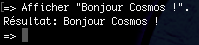
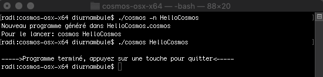

Bienvenue dans le premier atelier autour du langage cosmos.
Objectifs
- Installer Cosmos
- Tester le mode interactif
- Créer un premier programme qui dit ‘Bonjour Cosmos'
Quelle est votre conception de la programmation ?
Téléchargement
Cliquez sur le lien ci-dessous correspondant à votre plateforme pour télécharger cosmos.
Windows
MacOS
Linux
Décompression
Une fois le fichier téléchargé, double-cliquez dessus.
Pour Windows, après avoir double-cliqué sur le fichier, cliquez sur Extraire tout et corrigez le chemin d'extraction en retirant la dernière partie après le dernier caractère \ (antislash):

Console
Commençons par lancer une console :
- Windows : Clic dans le menu démarrer => Invite de commandes
- MacOS : Clic sur spotlight => terminal
- Linux : Si vous utilisez Linux, vous savez comment faire ;-)
Avancer dans le cosmos
Une fois la console lancée, il faut aller à l'endroit où est le dossier décompressé et lancer le programme:
Windows
cd Downloads\cosmos-win-x64
cosmos.exe

MacOS / Linux
cd Downloads/cosmos-osx-x64
./cosmos

Mode interactif
Par défaut, cosmos se lance en mode interactif, on peut donc éxécuter des commandes simples :
Afficher "Bonjour Cosmos !".

Premier programme
Un programme cosmos complet est divisé en 2 parties:
- Une entête
- Le contenu du programme
L'entête est obligatoire. De la même manière qu'un TAG de fichier MP3, elle contient des informations sur le programme (auteur, date, ...) qu'on appelle méta-données.
Génération d'un squelette
Pour créer un squelette, on peut utiliser la commande suivante:
cosmos -n <nomDuProgramme>

cosmos --nouveau <nomDuProgramme>
Ajout d'une instruction
En ouvrant le fichier avec un éditeur de texte (notepad sur windows et textedit sur MacOS par exemple), on peut y ajouter une instruction:
Il ne reste plus qu'à lancer le programme:
cosmos HelloCosmos

Pour parler couramment en langage Cosmos, un dictionnaire est disponible sous forme de cheatsheet (traduit littéralement par feuille de triche) en cliquant ICI.
Pour terminer, un petit quizz facilitera la mémorisation à long terme des éléments pratiqués dans cet atelier.